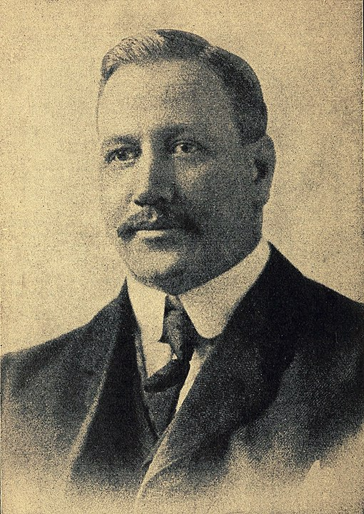
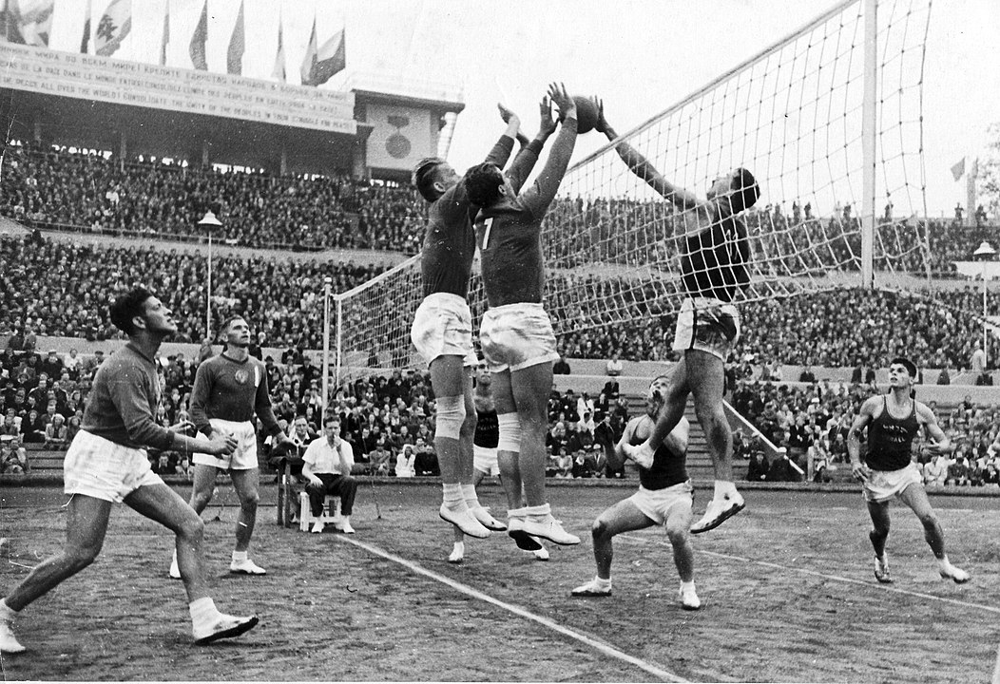
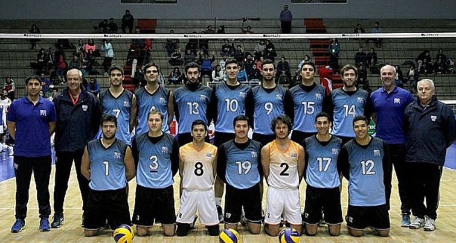
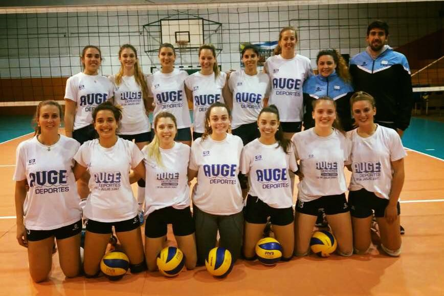

El nombre voleibol en español deriva del inglés “volleyball” y hace referencia a una disciplina de más de cien años de existencia que fue creada en 1895 por William G. Morgan, director de educación física en la asociación Young Men’s Christian Association (YMCA) de Estados Unidos.
En sus inicios se llamaba “mintonette” pero notaron que el voleo del balón sobre la red describía la escencia del juego y decidieron cambiarle el nombre a "volley ball". En 1952 la asociación norteamericana de voleibol unificó las palabras para denominarlo de manera oficial “volleyball”.
En 1870 nació William G. Morgan en Nueva York. Estudió en Mount Hermon Preparatory School en Massachusetts donde conoció a James A. Naismith en ese entonces profesor de educación física de la YMCA y creador del basquetbol.
Naismith quedó impresionado con las habilidades atléticas de Morgan y lo alentó para que continúe su educación en la escuela internacional de capacitación de la asociación cristiana de hombres jóvenes, actualmente llamada Springfield College. En 1894 Morgan se graduó y comenzaría aquí el camino que culminaría en la invención del voleibol.
Un año más tarde en 1895 William G. Morgan asumió como director de educación física en la YMCA y se encontró con un problema, debía proporcionar el ejercicio sin que fuera demasiado agresivo e intenso. Notaba que el basquetbol a pesar de tener mucha aceptación resultaba demasiado agotador.
Se vio en la necesidad de buscar una alternativa en la que no fuese necesario tener tanto contacto entre los jugadores y dar tantos golpes al balón de modo que se adaptara a un público más amplio. Morgan tomó ideas de diversos deportes como la pelota del baloncesto, la red del tenis, el uso de las manos del handball y el concepto de entradas del béisbol. Así creó una disciplina que denominó “mintonette”.
Un año después el juego mintonette resultó muy popular y obtuvo una audiencia en la conferencia de directores físicos de la asociación YMCA, celebrada en Massachusetts. Allí, el Dr. Alfred Halstead, profesor del Springfield College, observó que lo más destacado del juego era el voleo del balón sobre la red. Por eso, sugirió rebautizarlo “volley ball”.
En los orígenes el mintonette resultaba bastante diferente al desempeño del voleibol que se conoce en la actualidad. Se jugaba en una cancha más pequeña con un balón muy pesado una red más baja y demasiados jugadores que golpeaban el balón una cantidad ilimitada de veces.
Aunque Morgan probablemente no lo imaginó en aquel momento décadas más tarde el voleibol se convirtió en la segunda disciplina de equipo más popular del mundo después del futbol.

William G. Morgan
Foto de Hayes tomada de Wikimedia Commons
Crecimiento mundial del voleibol
El juego de voleibol alcanzó amplia aceptación gracias al apoyo y a la difusión de la asociación YMCA alentada por dos escuelas profesionales de educación física: Springfield Collage y George Williams Collage.
A comienzos del 1900 Canadá fue el primer país extranjero que adoptó el juego como deporte para ser practicado en diversas instituciones. Pronto lo siguieron Japón en 1908 y Filipinas 1910 donde fue incluido en el programa de los primeros juegos del lejano oriente en 1913. Así comenzó su expansión a nivel mundial.
En 1914 fue incluido en el programa de educación y recreación de las fuerzas armadas de Norteamérica. En 1916 la YMCA logró la rápida difusión del voleibol entre los estudiantes universitarios de Estados Unidos a través de la publicación de una serie de artículos sobre su reglamento.
Es aquí donde se anunció que el número de jugadores por equipo se limitaba a seis y más tarde en 1922 se limitó a tres el número de toques del balón por jugada. Sin embargo hasta principios de 1930 el voleibol resultaba un juego de ocio y recreación con pocas presentaciones competitivas a nivel mundial y con un reglamento que variaba según el país donde se jugaba.
En 1947 se creó en Francia la Federación Internacional de Voleibol (FIVB). Este organismo mundial se encarga de regular las normas a nivel competitivo y de celebrar encuentros de manera periódica.
En los Juegos Olímpicos de París en 1924 se jugó por primera vez al voleibol tradicional como deporte de demostración. Pero recién en 1964 pasó a formar parte de las especialidades olímpicas en el encuentro celebrado en Tokio.
Hoy el voleibol es uno de los deportes populares más practicados a nivel mundial con competiciones como el campeonato mundial FIVB, la liga mundial FIVB, el gran premio mundial FIVB y los Juegos Olímpicos.

El voleibol en Uruguay
En un país con un poco más de 3.000.000 de habitantes el deporte uruguayo está lleno de historias que parecen salidas de libros de cuentos. La Federación Uruguaya de Vóleibol (FUV) tiene más de 100 años siendo su fundación el 11 de marzo de 1915 y es protagonista de muchos capítulos exóticos entre las disciplinas deportivas.
Si bien está lejos de la gloria deportiva la FUV tiene una rica historia llegando hasta nuestros días como un deporte con un fin más social que competitivo.
A comienzos del siglo XX fue una de las primeras disciplinas que se organizaron en sociedad nació como la Unión de Sociedades de Voleibol, impulsada por la recién creada Comisión Nacional de Educación Física (C.N.E.F). En tiempos en los que el país estaba en su etapa de crecimiento.
Fue fundador de la Confederación Sudamericana en 1946, también fue uno de los 14 fundadores de la Federación Internacional en 1974.
Uruguay fue sede de dos mundiales uno extra masculino en 1969 y la copa del mundo femenina de 1973. Consiguió todo sin logros deportivos fue último en los dos mundiales que organizó y no ganó un set si no fuera organizador nunca hubiera competido a ese nivel. El mayor logro de la FUV en las canchas fueron vicecampeonatos sudamericanos de mayores masculinos y femeninos. En el salón de la fama de la FIVB hay una mención a nuestro país por su aporte a la organización.
Los orígenes
En 1912 con la llegada del profesor de educación física Jess Hopkins enviado para reorganizar la Asociación Cristiana de Jóvenes (A.C.J) e impulsar el voleibol y el basquetbol, los nuevos deportes que se habían creado en Estados Unidos, nuestro país ingresó en un profundo cambio en su matriz deportiva. Por esa razón Hopkins estableció un antes y un después en Uruguay.
La Federación de basquetbol que se fundó una semana después que la de voleibol tuvo un rápido crecimiento y consiguió éxitos deportivos de primer nivel. La Federación Uruguaya de Voleibol en cambio se transformó en un deporte social más que competitivo.
En la historia
La FUV nació el 11 de marzo de 1915 como Unión de Sociedades de Vóleibol. Los clubes fundadores fueron ACJ, Club Nacional de Fútbol, Bristol y Sporting Club. En 1922 se llamó Federación Uruguaya de Volley-Ball, en 1946 Federación Uruguaya de Volleyball Amateur y en 2002 Federación Uruguaya de Voleibol.


Selección femenina de voleibol Uruguaya (2017). Foto tomada de Montevideo Portal